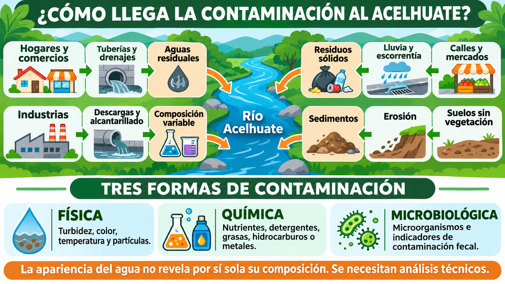
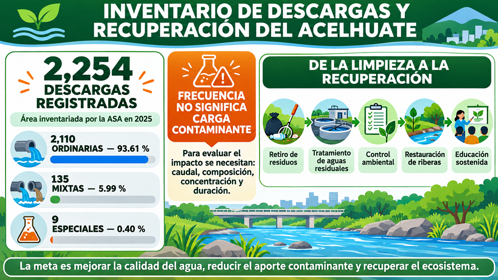

Portal educativo universitario · El Salvador
Un río urbano.
Un desafío de todos.
Comprende qué ocurre en el río Acelhuate, contrasta la evidencia y descubre cómo la educación, el saneamiento y la participación pueden abrir un camino hacia su recuperación.
✓ Fuentes verificables
✓ Recursos multimedia
✓ Enfoque educativo
Objetivo
Informarse para actuar
2,254
descargas registradas
en el área inventariada por la ASA, 2025
01 · Conozcamos el Acelhuate
El río es parte de una red viva
El Acelhuate forma parte de la cuenca alta del río Lempa y atraviesa un territorio densamente urbanizado. Su condición no puede entenderse observando únicamente un punto: quebradas, drenajes, afluentes, calles y actividades humanas se conectan dentro del sistema.
Un río urbano recibe agua y materiales desde diferentes rutas. La lluvia puede movilizar residuos; las tuberías conducen aguas residuales; la pérdida de vegetación favorece la erosión. Por eso, estudiar la cuenca permite relacionar causas, impactos y posibles respuestas.
Mirada de cuenca: lo que ocurre aguas arriba puede influir en comunidades y ecosistemas ubicados aguas abajo.

02 · Problemática ambiental
La contaminación tiene múltiples rutas y formas
La apariencia del agua aporta indicios, pero no sustituye una evaluación técnica. Una muestra clara puede contener microorganismos o sustancias químicas; una descarga oscura no revela por sí sola su composición.
Contaminación física
Modifica turbidez, color, temperatura y cantidad de partículas o sedimentos.
Contaminación química
Puede incluir nutrientes, detergentes, grasas, hidrocarburos o metales, según la fuente.
Contaminación microbiológica
Se relaciona con microorganismos e indicadores de contaminación fecal.

La evidencia tiene fecha y alcance
Los estudios del SNET de 2002 y los diagnósticos del MARN de 2011 son antecedentes importantes, pero no deben presentarse como mediciones actuales. En 2025, el inventario de la ASA registró 2,254 descargas en el área estudiada: 2,110 ordinarias, 135 mixtas y 9 especiales.
Consultar el mapa narrativo de la ASA03 · Principales causas
El problema comienza antes de que los residuos lleguen al cauce
Aguas residuales domésticas
Pueden contener materia orgánica, grasas, detergentes, nutrientes y microorganismos cuando no reciben tratamiento adecuado.
Actividades comerciales e industriales
La composición de sus vertidos depende de cada proceso. Su impacto requiere datos sobre caudal, concentración y sustancias presentes.
Residuos sólidos y escorrentía
La lluvia arrastra plásticos, envases y otros desechos desde calles, mercados y espacios urbanos hacia drenajes y quebradas.
Erosión y pérdida de vegetación
El suelo desprotegido puede aumentar la carga de sedimentos, la turbidez y la alteración de microhábitats acuáticos.
Educación y corresponsabilidad insuficientes
Los hábitos cotidianos, la vigilancia ambiental y la participación sostenida influyen en la prevención de nuevas fuentes de contaminación.
04 · Impactos
Lo que entra al río transforma todo el sistema
Los efectos dependen del tipo de contaminante, su concentración, el tiempo de exposición y las condiciones del cauce.
Calidad del agua
El exceso de materia orgánica puede consumir oxígeno durante su descomposición y afectar procesos ecológicos.
Biodiversidad
Los sedimentos, residuos y sustancias tóxicas pueden alterar refugios, alimento y reproducción de organismos.
Salud comunitaria
El saneamiento deficiente aumenta riesgos sanitarios, aunque atribuir enfermedades concretas requiere estudios epidemiológicos.
Entorno urbano
La acumulación de residuos puede obstruir drenajes, favorecer malos olores y deteriorar los espacios cercanos.
Efectos aguas abajo
Los materiales pueden transportarse, transformarse, degradarse o sedimentarse a lo largo de la red hidrográfica.
Vulnerabilidad climática
Lluvias intensas y periodos secos modifican el caudal, la movilización de residuos y la concentración de sustancias.
05 · Recuperación y soluciones
Limpiar ayuda, pero recuperar exige continuidad
Retirar basura mejora temporalmente un punto. Si continúan las descargas, el problema reaparece. La recuperación necesita acciones conectadas y resultados medibles.
1PrevenirReducir residuos y vertidos desde su origen.
→
2TratarGestionar las aguas residuales antes de descargarlas.
→
3RestaurarProteger riberas, suelos y funciones ecológicas.
→
4EvaluarMedir avances con indicadores comparables.

Instituciones
Planificar saneamiento, hacer cumplir la normativa, publicar indicadores y sostener el monitoreo.
Comunidades
Prevenir residuos, reportar puntos críticos desde lugares seguros y participar en iniciativas organizadas.
Centros educativos
Relacionar ciencia, ciudadanía y territorio mediante proyectos de aprendizaje y comunicación ambiental.
06 · Biblioteca multimedia
Observar, comparar y formular mejores preguntas
Un recurso adquiere valor cuando se identifica su autor, fecha, territorio, propósito y limitaciones.
Reportaje
Contaminación y revitalización del Acelhuate
Recurso periodístico para observar problemas visibles y contrastarlos con datos técnicos.
Proceso
Tratamiento de aguas residuales
Introducción al proceso de reducción de contaminantes antes de devolver el agua al ambiente.
Educación
Cuidado responsable del agua
Material para reflexionar sobre prevención, uso responsable y corresponsabilidad.
07 · Actividad interactiva
¿Qué aprendiste?
Responde cinco preguntas. Al finalizar recibirás una explicación breve de cada respuesta.
Tu resultado— / 5
08 · Fuentes y transparencia
Consultar, contrastar y reconocer límites
Este portal es un recurso educativo basado en revisión documental. No sustituye estudios de laboratorio, dictámenes institucionales ni asesoramiento sanitario.
Inventario de vertidos y saneamiento
Mapa narrativo sobre los ríos Matalapa y Acelhuate.
Abrir fuente ↗Plan de saneamiento y restauración
Presentación del plan elaborado con ASA y colaboración del MARN.
Abrir fuente ↗Situación ambiental de la subcuenca
Antecedentes, diagnóstico y ruta crítica de intervención.
Abrir fuente ↗Evaluación de la calidad del agua
Propuesta técnica y parámetros del Índice de Calidad de Agua.
Abrir fuente ↗Proyecto académico
Universidad de El Salvador
Facultad de Ciencias Naturales y Matemática · Escuela de Matemática
Licenciatura en Informática Educativa, modalidad a distancia
- Asignatura
- Educación Ambiental y Cambio Climático
- Ciclo
- II-2026
- Docente
- M.Sc. Isis Ivania Chávez Carrillo
- Integrantes
- Kelvin Ariel Martínez Lara
Andrea Nicole Azucena Blandón